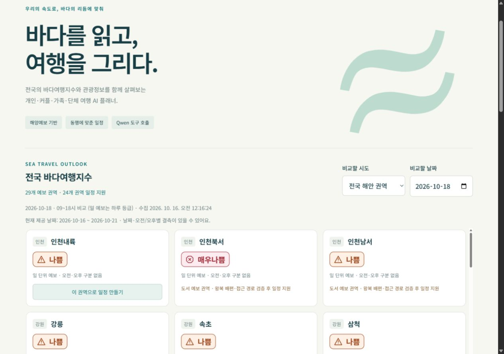

01 / DATA↗
Scientific files → spatial services
Validate NetCDF/CSV specifications, transform raster and current-vector products, load PostgreSQL, and publish selected GeoServer layers.
NetCDF / PostgreSQL / GeoServer
Scope
Input conformity is distinct from scientific accuracy.
02 / DATA↗
Vessel movement, with context
Combine vessel trajectories, metadata and fairway/anchorage polygons to visualize movement and activity candidates.
GeoPandas / Spatial rules / Parallel processing
Scope
Rule-based activity candidates require independent confirmation.
03 / DATA↗
Make forecast changes inspectable
Compare service and prediction products; summarize index changes, warning differences and event days in Excel, CSV and HTML reports.
Python / pandas / Analytical reporting
Scope
Product comparisons do not measure skill against observations.
04 / DATA↗
Find eligible model cells
Match service sites to nearby ocean, wave and atmospheric grid cells using explicit value rules and parallel searches.
Python / NetCDF / Multiprocessing
Scope
Value screening is distinct from forecast validation.
05 / RESEARCH↗
Snow, ocean and atmosphere
Research and coursework examining snowfall, sea surface temperature, circulation and sea ice through regression, composites, EOF and time-series methods.
Fortran / GrADS / MATLAB
Scope
Full scientific replication remains unverified.
06 / AI↗
Public data → inspectable travel drafts

Tourism, marine, weather and transport evidence connected through eight typed tools. One- to three-day car or walking drafts across 29 forecast-linked scopes.
Python / FastAPI / Ollama
Scope
Local prototype. Reservations and island access need separate checks.
07 / RESEARCH↗
Explore dispatch scenarios
Model empty-bottle and empty trucks through fixed process stages. Inspect stage timestamps, loading groups and mean turnaround times.
Python / Tkinter / Deterministic modeling
Scope
Known resource conflicts; not validated operational schedules.
08 / TOOLS↗
A workspace for remote compute
SSH terminals, SFTP and system/GPU telemetry, with LLM-runtime adapters and environment-dependent container and database monitoring.
Rust / Tauri / React / Native mobile
Scope
Desktop beta; native iOS and Android implementations.